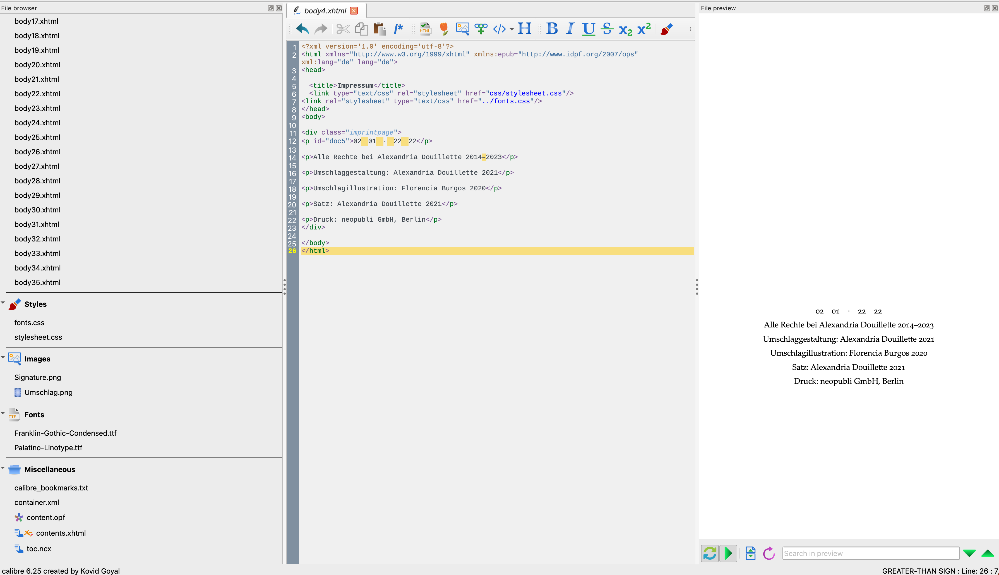

About ten years ago, I decided to spend my free time writing novels. Willingly, believe it or not.
And the thing is, if you write a book and want to read it in proper form, you have to make an e-publication of it some way down the line.
Here's the kicker: an .epub file is just a bunch of .xhtml files and .css, which gives me a whooping advantage here.
